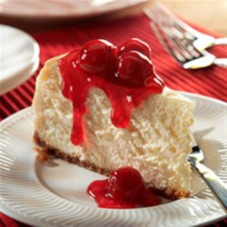

Cheesecake

Here is a recipe for cheesecake.
Ingredients
- 1 3/4cups of graham crumbs
- 1/3butter, melted
- 1 1/4 cups sugar, divided
- 3(8 ounce)packagaes Cream Cheese, softened
- 1 cup of Sour Cream
- 2 teaspoons vanilla
- 3 eggs
- (21 ounce) can cherry pie filling
Steps
- Heat oven to 350 degrees F.
- Mix graham crumbs, butter and 1/4 cup
- Beat cream and remaining sugar in large bowl until blended.
- Add sour cream and vanillia; mix well.
- Add eggs,1 at a time,beating on low speed after each addition just until blended.
- Bake 1 hour to 1 hour 10 min. or until center is almost set.
- Run knife around rim of pan to loosen cake;cool before removing rim.
- Refrigerate cheesecake 4 hours.
- Top with pie filling before serving.